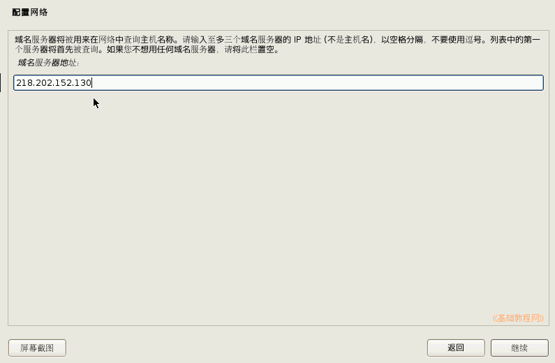

Debian 安装基础教程
作者：TeliuTe 来源：基础教程网
五、配置网络 返回目录 下一课常见上网方式有宽带 ADSL 和局域网上网；
1、DHCP 自动配置
1）在接下来的安装步骤列表中，点“继续”按钮；
2）经过一阵搜索后，出来配置网络安装步骤，点“继续”；
3）如果上网的方式是ADSL或者自动获取IP地址，直接点“继续”；
4）配置成功以后，出来一个输入主机名的对话框；
2、局域网配置
1）注意：ADSL 用户不用设这个，在出来的配置网络对话框中，选“否”然后再点“继续”按钮；
2）在出来的 IP 地址对话框中，输入一个局域网的 IP 地址，点“继续”按钮；
3）接下来的子网掩码已经输好了，直接点“继续”按钮；
4）接下来的网关也自动给出，检查无误点“继续”按钮；
5）接下来的DNS服务器，输入自己所用的地址，然后点“继续”按钮；

6）然后出来一个网络参数面板，检查无误后，点“继续”按钮；
本节学习了配置网络的基础知识，如果你成功地完成了练习，请继续学习下一课内容；
本教程由86团学校TeliuTe制作|著作权所有
基础教程网：http://teliute.org/
美丽的校园……
转载和引用本站内容，请保留作者和本站链接。